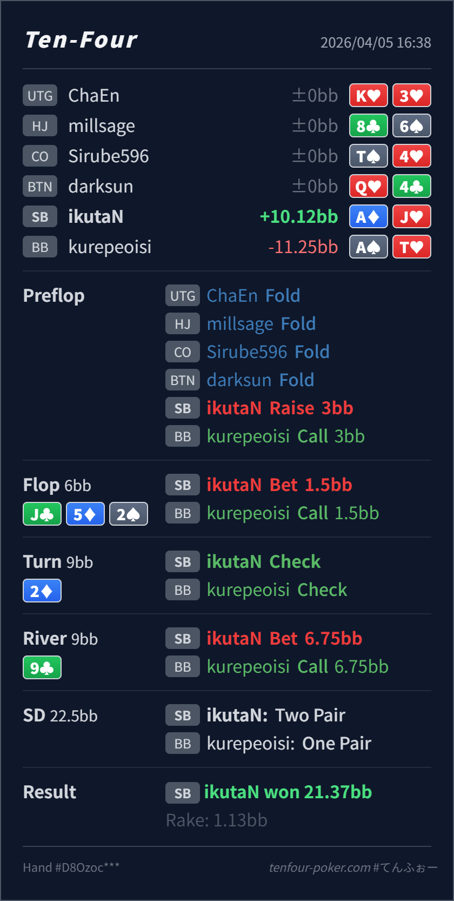

Preflop
良いAJo は SB open の明確な value 側です。
主論点は、top pair good kicker を 3street 取り切る hand と見るか、turn で一度抑えて river で thin value を取り直す hand と見るかです。当時の思考メモはないので、「turn でもまだ打ちたくなる」あるいは「river 75%pot は少し厚いかも」という仮定で見ます。結論は、line 全体は大筋で良く、turn check と river value の組み合わせはかなり筋が通っています。
ikutaN SB AdJhJc 5d 2s / 2d / 9cturn でまだ強いから打ちたくなる、または river 75% は厚すぎるかも という揺れを仮定して見ます。ikutaN SB AdJh3BB, BB callJc 5d 2s / 2d / 9c1.5BB, BB call6.75BB into 9BB, BB call
良いAJo は SB open の明確な value 側です。
Jc 5d 2s良い
Hero は top pair good kicker で value を取りやすいです。
2d良いAJo はまだ強いですが、無理に 2barrel で押し切る形ではありません。
9cだいぶ良い
Hero は thin value を取りやすい上側の Jx です。
| 論点 | その場で置きがちな見立て | どこがズレたか | 次回の基準 |
|---|---|---|---|
turn の 2d | top pair good kicker なので、まだ 2barrel したくなる | board が pair して 3street で大きく取り切る形ではなくなり、check で BB の弱い showdown hand を残す価値が高いです。 | まだ強い と 3street value を取りたい は別。pair turn では check が増えやすい |
river 75%pot | thin value にしては少し厚すぎるかもと感じる | turn が check-check で終わると BB range はかなり capped しやすく、A-high や弱い Jx から厚めに取れる形になります。 | turn で相手が弱さを見せたあとなら、river で一段厚い value を取りにいってよい |
| ストリート | その時点の見え方 | 判断の焦点 | 評価 | 推奨 |
|---|---|---|---|---|
| Preflop | BB defend は広く、suited hand、broadway、Ax、pocket が多いです。 | AJo は SB open の明確な value 側です。 | 良い | 3BB open で問題ありません。 |
Flop Jc 5d 2s | BB の call には Jx、5x、2x、gutshot、一部の A-high が残ります。 | Hero は top pair good kicker で value を取りやすいです。 | 良い | 25%pot 前後の c-bet はかなり自然です。 |
Turn 2d | board が pair して BB の弱い showdown hand も残りやすいままです。 | AJo はまだ強いですが、無理に 2barrel で押し切る形ではありません。 | 良い | check で十分です。 |
River 9c | BB が turn を check back したことで、強い Jx+ は残る一方、missed draw や弱い Ax も相当残ります。 | Hero は thin value を取りやすい上側の Jx です。 | だいぶ良い | 50-75%pot の value は十分あります。 |
AJo のような top pair good kicker は、turn で無理に 3発打ち切らず、river の thin value に回す設計がよくあります。まだ強いから打つ ではなく、相手の弱い range を残した方が得か で見ると判断しやすいです。A-high や弱い Jx を降ろしにくいなら、この 75%pot はかなり取りやすいです。